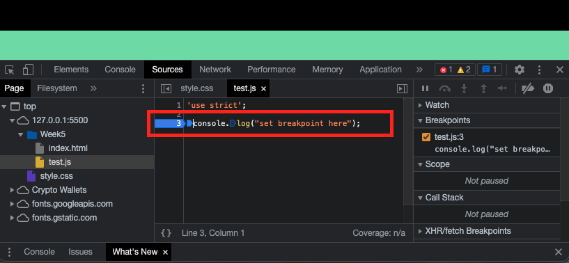

Testing and Debugging
When developing, it is best to make sure that if your program fails that it will fail "LOUDLY."
This will make debugging and testing much easier when you run in to errors and bugs. In production
you should make sure that if there is a failure that the program fails silently (unless a failure is
going to directly impact the user experience).
Testing and debugging are used to avoid or resolve errors, exceptions, and warnings.
Definitions
- Errors - Software break due to its internal or external environment.
- System Error - An issue has occured with external devices that the program is interacting with.
- Program Error - There is a problem with the code that is causing the program to break
- User Error - The users interaction with the program has cause the program to break (invalid inputs)
- Exceptions - An error that returns a object or message that can be used to debug a program
- Stack Traces - A papertrail produced by an exception to show the origin of an error
- Warnings - A warning is an "error" that is not major enough to break the program
**When you are coding in JavaScript it is wise to include 'use strict;'' at the top of your files. It will help to make sure that you are using good practices in your code and help prevent bugs and errors.
Debugging in The Console
Errors and warnings will be located in the console (open the console for examples)
You can set breakpoints in your code by opening you dev tools in the browser and going to sources 
- alert()
- console.log()
- console.table() // Like log but better for arrays and objects
- console.trace() // Prints out a trace that shows functions called leading up to an error
- triple equal operator checks for matching value and type ('age === 23')
- catch/throw statements
Other Debugging Tools:
Test-driven Development
Test driven development is the process of writing test prior to the code. The tests validate the code by looking for expected outputs based on inputs. Here are the different steps in test driven development:
- Write Tests
- Write code to pass the tests
- Refactor the code
- Test refactored code
- Write more testes for new features